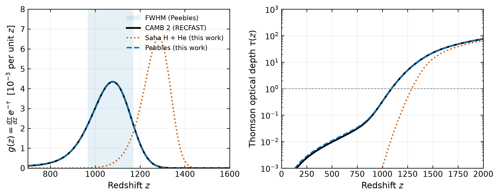

I'm Sethulekshmi Beena, an astrophysics researcher curious to study how the Universe evolved from a nearly uniform early state into the structure we see today. I hold an MSc in Astrophysics with Distinction from the University of Hertfordshire.
The galaxies around us began as tiny ripples in the early Universe, still visible today in the cosmic microwave background. I want to understand that whole story: from the first moments, where quantum gravity and particle physics take over, through recombination and the release of the CMB, to the formation of galaxies. Along the way, I'm interested in where our standard models of cosmology and particle physics still fall short, and how we can test them.
My research so far spans both ends of this story. For my MSc, supervised by Prof. Kristen Coppin, I studied the cold molecular gas in SGP 38326, a dusty starburst galaxy seen when the Universe was about 1.4 billion years old, using multi-line ALMA observations and Bayesian radiative-transfer modelling. A paper from this work is in preparation. Alongside this, I wrote CMB-Decoupling, an open-source Python code that models hydrogen recombination and the last-scattering surface, and validated it against CAMB/RECFAST.
I'm now looking for a PhD in cosmology, where I can bring together CMB physics and statistical inference.
Research
How much molecular gas fuels a galaxy forming stars at a ferocious rate, less than 1.5 billion years after the Big Bang?
For my MSc project I analysed ALMA observations (programme 2017.1.00510.S) of the submillimetre galaxy SGP 38326. Neutral atomic carbon is a clean tracer of molecular gas at high redshift, so I measured both [CI] transitions to derive the excitation temperature, carbon mass and total molecular gas mass.
I built the analysis pipeline in Python and validated it by reproducing the published results of Franco et al. for a comparison source before applying it to my own target. The pipeline handles CMB correction of line luminosities, iterative solution for the excitation temperature, and Monte Carlo error propagation through the full iterative calculation. I then constrained the gas excitation with Bayesian inference (emcee MCMC over an interpolated grid of non-LTE RADEX models), compared the results with KOSMA-tau photodissociation-region models, and fitted the dust continuum with a modified blackbody.
SMG1 redshift
4.4237 ± 0.0004
Paper
in preparation
SGP 38326 · SMG1z = 4.4237
Neutral carbon lines emitted at 492 and 809 GHz arrive at ALMA redshifted to about 90.7 and 149.2 GHz. Schematic profile.
The last-scattering surface
When was the cosmic microwave background actually released, and how thick is the "surface" it comes from? CMB-Decoupling models hydrogen recombination with the Saha equation (including helium) and the Peebles three-level atom, then computes the Thomson optical depth and the visibility function of last scattering. Validated against CAMB/RECFAST: last scattering at z* = 1089.44, compared with CAMB's 1089.89.

Visibility function (left) and optical depth (right). The Peebles model tracks CAMB/RECFAST closely; Saha equilibrium puts last scattering about 200 in redshift too early.
Gaussian line fitting across ALMA spectral windows in Bands 3, 4 and 6, CMB-corrected L′ luminosities, excitation temperature and gas-mass derivation with Monte Carlo uncertainties; dust SED fitting.
LVG excitation modelling
Python · emcee · RADEX
Bayesian MCMC over an interpolated grid of 847 non-LTE RADEX models, cross-checked with a chi-squared grid search.
Publications
Beena, S., Coppin, K. E. K., et al., The interstellar medium of the hyperluminous starburst SGP 38326, in preparation.
Software: Beena, S. (2026), CMB Decoupling: hydrogen recombination and photon last scattering, v1.0.0, Zenodo, doi:10.5281/zenodo.23932529
Background
MSc Astrophysics (Distinction), University of Hertfordshire, 2025–2026. Research project on molecular gas in the high-redshift starburst SGP 38326.
BTech final-year research project (team of three), ISRO Liquid Propulsion Systems Centre, Feb–Mar 2024. The effect of turbulence modelling on freestream-plume interactions for the Saturn V launch vehicle: a CFD study in ANSYS Fluent of plume-induced flow separation, comparing three turbulence models, and varying turbulence intensity and compressibility for the two-equation models.
BTech Aeronautical Engineering, 2020–2024, Rajadhani Institute of Engineering and Technology (APJ Abdul Kalam Technological University). Foundation in fluid dynamics, propulsion and numerical methods.
Teaching & outreach
STEM tutor, Mindspire Labs (Robotics.ai), Amersham, UK, Sep 2026–present. Weekly robotics and applied-AI sessions for ages 6–15: C++ and Python on Arduino, ESP32 and Raspberry Pi, from sensors to AI vision.
Drone and nanosatellite trainer, Global Drone Hub (Jet Aerospace), Palakkad, India, Jul–Nov 2024. Trained students to build drones and CubeSat-style nanosatellites.